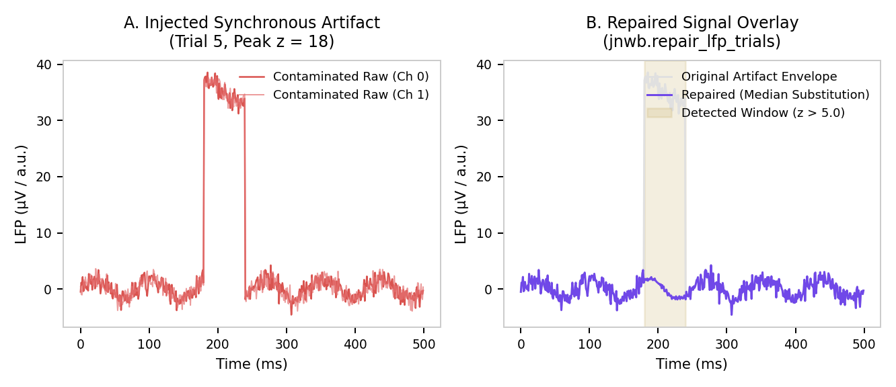

05. Artifact Detection & Signal Repair¶
This document details the public artifact detection and repair algorithms in jnwb, designed for high-density multi-channel electrophysiology and trial-segmented LFP/TFR data.
1. Overview & Repair Strategy¶
High-channel-count probes (e.g. Neuropixels, multi-shank arrays) suffer from distinct artifact modalities: 1. Electrode Pop & Drift: Single bad channels showing near-zero correlation or massive amplitude spikes. 2. Chewing / Movement / Optical Transients: Synchronous, high-amplitude excursions spanning many or all channels simultaneously on specific trials.
jnwb provides a two-stage strategy:
- Detection (jnwb.artifact_detection): Statistical identification of bad channels and trials via cross-correlation and amplitude z-scores.
- Repair (jnwb.artifact_repair): Substitution of artifact-corrupted samples with cross-trial medians to preserve array geometry without discarding entire trials.
graph TD
Raw[Raw Segmented LFP: N_trials x N_channels x N_times] --> Detect[Cross-Channel Synchrony & Amplitude Z-Score]
Detect --> Mask[Artifact Boolean Mask]
Mask --> Repair[Cross-Trial Median Substitution]
Repair --> Clean[Repaired LFP Tensor + Diagnostics]

2. Artifact Detection Primitives (jnwb.artifact_detection)¶
All 5 core artifact detection functions are exposed directly in the top-level jnwb namespace:
Channel Correlation Matrix & Bad Channel Rejection¶
Computes the inter-channel correlation matrix and identifies disconnected or noisy electrodes via median correlation z-scores:
import jnwb
# data: (n_channels, n_timepoints)
corr = jnwb.channel_correlation_matrix(data)
# Flag channels whose median correlation is z_thresh standard deviations below population mean
bad_chan_mask, mean_corrs, z_scores = jnwb.bad_channels_from_correlation(corr, z_thresh=2.5)
Trial Correlation Matrix & Single-Channel Bad Trials¶
Identifies corrupted trials within an individual channel:
# trials_data: (n_trials, n_timepoints)
trial_corr = jnwb.trial_correlation_matrix(trials_data)
bad_trials, corr_z, amp_z = jnwb.bad_trials_single_channel(
trials_data,
r_thresh=0.2, # Minimum acceptable correlation with template
amp_z_thresh=4.0 # Maximum acceptable peak-amplitude z-score
)
Consensus Bad Trials Across Channels¶
Aggregates bad trial flags across multiple channels using a consensus voting threshold:
# bad_flags: (n_channels, n_trials) boolean array
consensus_mask, bad_fractions = jnwb.consensus_bad_trials(
bad_flags,
min_frac_channels=0.5 # Flag trial if >50% of channels detected an artifact
)
3. High-Level Trial Repair Pipelines (jnwb.artifact_repair)¶
repair_lfp_trials¶
Performs time-resolved cross-channel synchrony detection on trial-segmented LFP tensors, replacing flagged artifact intervals with the condition-matched cross-trial median:
import jnwb
# segments: (n_trials, n_channels, n_times)
# times_ms: (n_times,) array of relative timestamps
repaired_lfp, frac_flagged, diagnostics = jnwb.repair_lfp_trials(
segments,
times_ms=times_ms,
z_thresh=6.0, # Threshold for cross-channel synchronous deviation
window_ms=(-100, 500) # Active evaluation interval
)
print(f"Total time-samples flagged and repaired: {frac_flagged * 100:.2f}%")
detect_band_outliers — the detection rule, on its own¶
repair_band_artifacts pairs a detector with a substitution. detect_band_outliers is that
detector alone, for callers who need the rule without the substitution:
# band_trace: (n_trials, n_times), already reduced to one value per (trial, time)
flagged, scale = jnwb.detect_band_outliers(band_trace, z_thresh=6.0, sided="upper")
trend is the median over trials (the shared evoked shape), resid = value - trend, and
scale is median(|resid|) pooled over all (trial, time) — one global scale, not one per
time bin. A per-bin MAD is itself inflated during the evoked response, and would mask a real
outlier exactly where one matters most. A returned scale of 0.0 means the trend was matched
exactly and nothing was flagged.
sided="both" is not the conservative choice
The default "upper" flags power increases only. "both" also flags decreases — so when
the response under study is a power decrease, a two-sided detector flags genuine
decreases as artifacts and substitutes them away. The detector then eats the very effect it
was meant to protect. Choose "both" only when artifacts in your data genuinely go in both
directions.
This is not hypothetical. A downstream reimplementation of this rule silently used a two-sided test while its own docstring claimed parity with the one-sided library version. The detector is exposed here precisely so the tail is an argument a caller states, rather than a detail buried in a copy that can drift.
Prefer calling over retyping. A numerical rule that is easier to retype than to reuse will
be retyped, and the copy will diverge from its docstring without anyone noticing. That is why
repair_band_artifacts calls this function rather than restating it — the rule has exactly one
implementation — and why it accepts channel-averaged input (see below) rather than forcing a
fork on anyone whose array is shaped differently.
repair_band_artifacts¶
Extends artifact repair into the time-frequency domain across canonical frequency bands:
# power: (n_trials, n_channels, n_freqs, n_times)
# freqs: (n_freqs,) exact frequency coordinates
repaired_power, frac_by_band = jnwb.repair_band_artifacts(
power,
freqs=freqs,
z_thresh=5.0
)
Channel-averaged power is accepted directly — pass (n_trials, n_freqs, n_times) and the same
reduced shape comes back:
repaired_avg, frac_by_band = jnwb.repair_band_artifacts(power.mean(axis=1), freqs=freqs)
Both forms agree by construction: detection runs on the channel-averaged trace either way, so
the 3-D path is the 4-D path with a length-1 channel axis, not a second implementation. Pass
sided="both" only after reading the warning above.
4. API Reference Summary¶
| Function | Primary Input | Returns | Purpose |
|---|---|---|---|
channel_correlation_matrix |
\((C \times T)\) | \((C \times C)\) | Inter-electrode correlation |
bad_channels_from_correlation |
\((C \times C)\) | (bad_mask, mean_corr, z_scores) |
Outlier channel detection |
trial_correlation_matrix |
\((N \times T)\) | \((N \times N)\) | Inter-trial waveform correlation |
bad_trials_single_channel |
\((N \times T)\) | (bad_mask, corr_z, amp_z) |
Per-channel bad trial detection |
consensus_bad_trials |
\((C \times N)\) | (consensus_mask, frac_channels) |
Multi-channel consensus voting |
repair_lfp_trials |
\((N \times C \times T)\) | (repaired_lfp, frac_flagged, diag) |
Median substitution on raw LFP |
repair_band_artifacts |
\((N \times C \times F \times T)\) | (repaired_power, frac_by_band) |
Median substitution on TFR |